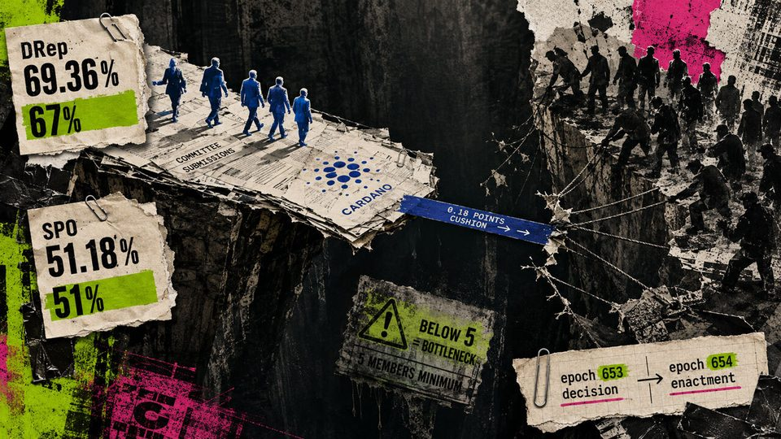
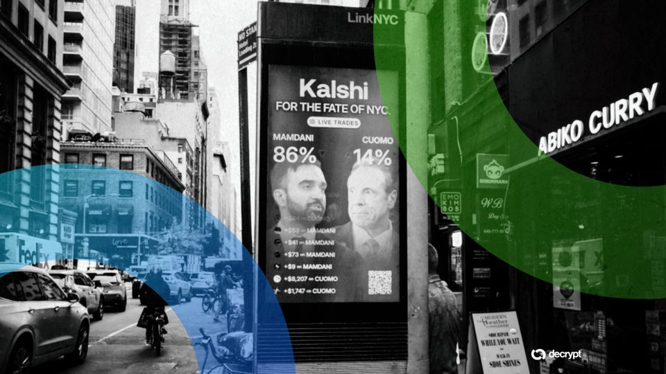
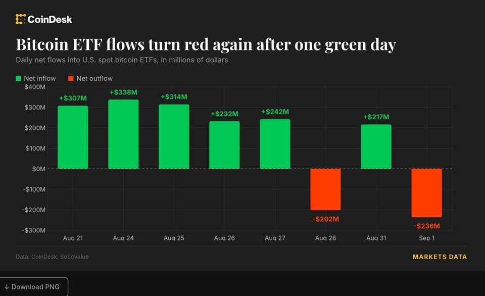
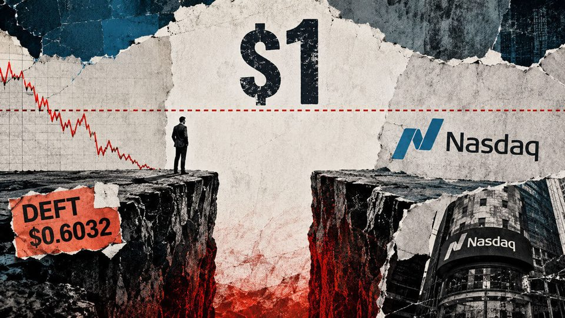
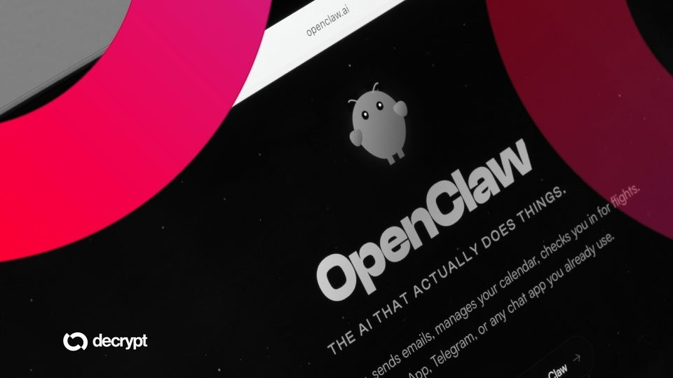
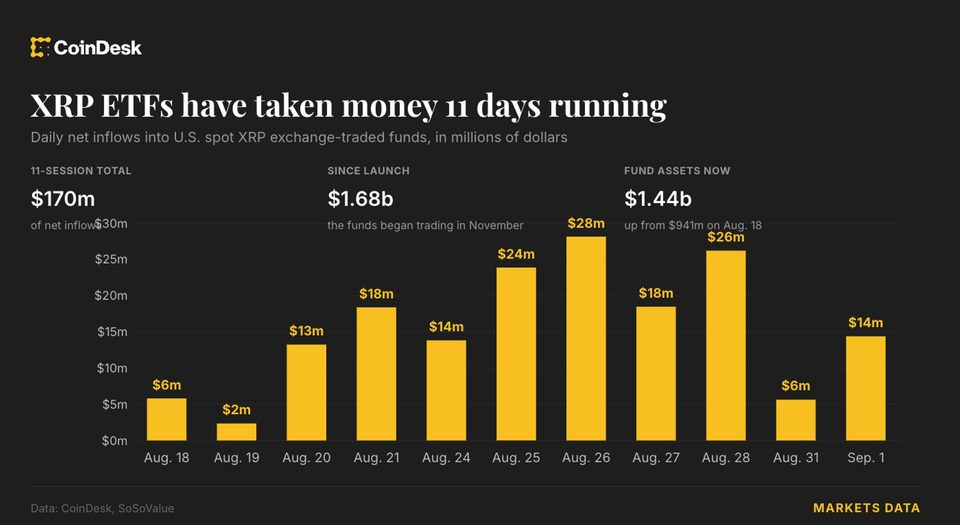
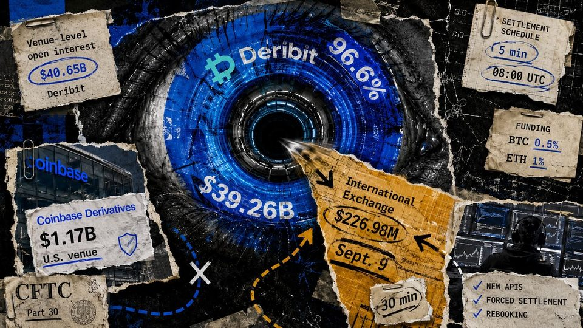
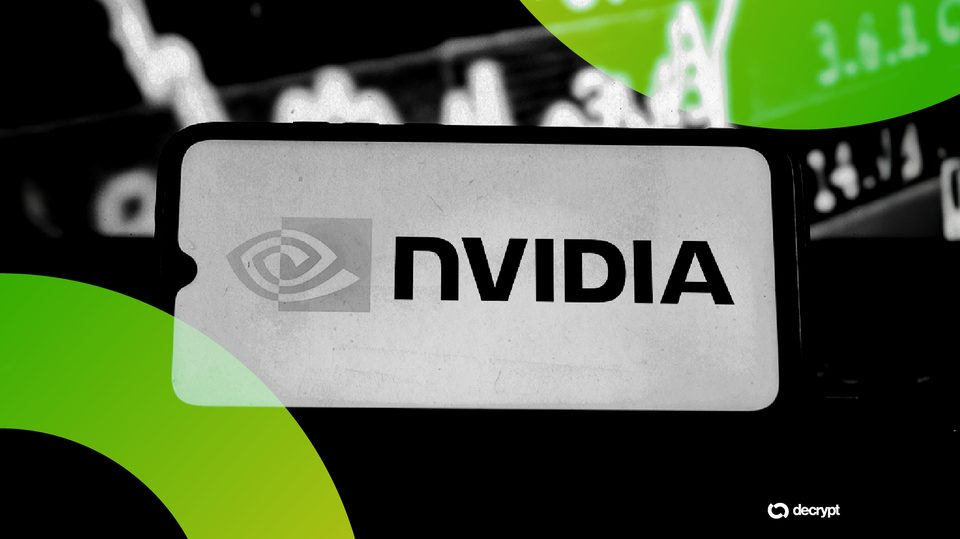

September 2, 2026
Daily headline set with source diversity, cleaned links, and local static rendering.
Crypto industry urges SEC to avoid blanket novel ETF restrictions
Grayscale, a16z, and the CCI asked the SEC to preserve existing classification rules and avoid treating novel exchange-traded products as a single category, while proposing different routes to clearer and faster reviews.

Cardano clears key voting thresholds for constitutional committee renewal by 0.18% margin
The pre-boundary vote shows how non-participating SPO stake can weigh against renewal even without an explicit No. The post Cardano clears key voting thresholds for constitutional committee renewal by 0.18% margin...

Kalshi Suspends House Candidate Laurie Buckhout for Betting on Herself
The North Carolina Republican bought less than $1,000 of contracts on her own race and drew a three-year ban.

Live updates: BlackRock's IBIT drives $236 million bitcoin ETF outflow
Live updates: BlackRock's IBIT drives $236 million bitcoin ETF outflow
Bitcoin ETFs notch best month of 2026 as BTC gains 25% in August
US spot Bitcoin ETFs reduced their year-to-date net outflows by 66% as Bitcoin gained about 25% in August, while Ether ETFs turned positive YTD at $732 million and XRP ETFs reached $502 million.

DeFi Technologies misses Nasdaq $1 deadline as DEFT faces delisting review
DEFT missed the required closing-price streak but could qualify for another 180 days as its consolidation option remains unused. The post DeFi Technologies misses Nasdaq $1 deadline as DEFT faces delisting review...

OpenClaw 2.0 Is Here: What Changed, Why It Took Two Months, and How It Stacks Up Against Hermes
The open-source agent framework that started the "autonomous AI" hype cycle just shipped its biggest update ever, almost by accident, and it's coming for the enterprise now.

XRP ETFs pull in $170 million over eleven days. Goldman tops institutional holders
XRP ETFs pull in $170 million over eleven days. Goldman tops institutional holders

Here's what happened in crypto today
Need to know what happened in crypto today? Here is the latest news on daily trends and events impacting Bitcoin price, blockchain, DeFi, Web3 and crypto regulation.

Deribit already holds 96.6% of Coinbase's derivatives open interest ahead of Sept. 9 migration
The Sept. 1 snapshot shows the Sept. 9 cutover moves a far smaller International Exchange book onto the dominant offshore venue. The post Deribit already holds 96.6% of Coinbase’s derivatives open interest ahead of...

Nvidia Invests $3.5 Billion in MediaTek to Expand Beyond GPUs
The deal, part of MediaTek's record $3.9 billion bond offering, ties Nvidia's chip ecosystem to a Taiwanese rival building its own AI accelerator business.
A China indicator that supports risk-taking in stocks and bitcoin is flashing red
A China indicator that supports risk-taking in stocks and bitcoin is flashing red